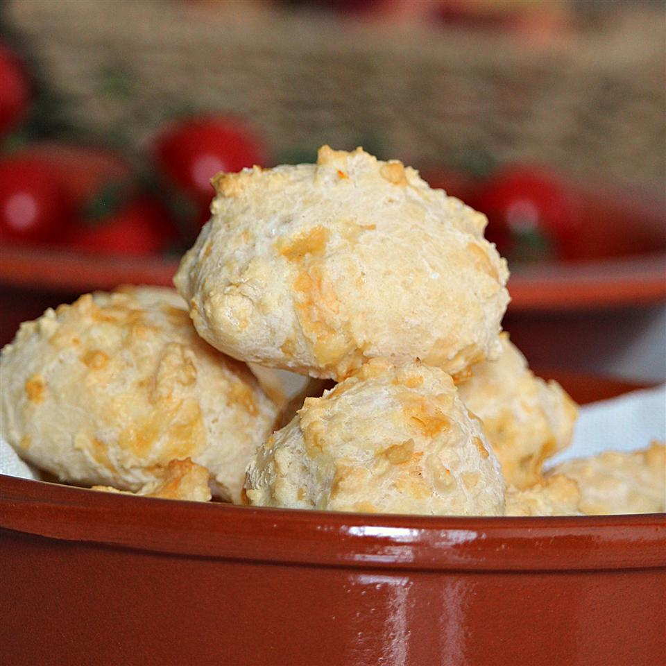

Pão de Queijo

Ingredients
- 4 cups tapioca starch (such as Bob's Red Mill®)
- 1 cup of water
- ½ cup vegetable oil
- 1 ½ tablespoons salt
- 1 ¼ cups shredded Mexican cheese blend
- 3 eggs
- 2 teaspoons water, or as needed
Steps
-
Preheat oven to 425 degrees F (220 degrees C). Line 2 baking sheets with
parchment paper.
- Pour tapioca starch into a wide bowl.
-
Combine 1 cup water, vegetable oil, and salt in a saucepan; bring to a
boil. Slowly pour over the tapioca, mixing with a spoon until evenly
combined. Let cool slightly, about 10 minutes.
-
Stir Mexican cheese blend and eggs into the tapioca mixture. Knead dough
until soft and sticky, 5 to 10 minutes. Add water, 1 teaspoon at a time,
if dough seems dry.
- Drop spoonfuls of dough 1 inch apart on the baking sheets.
-
Bake in the preheated oven until lightly golden, about 25 minutes.